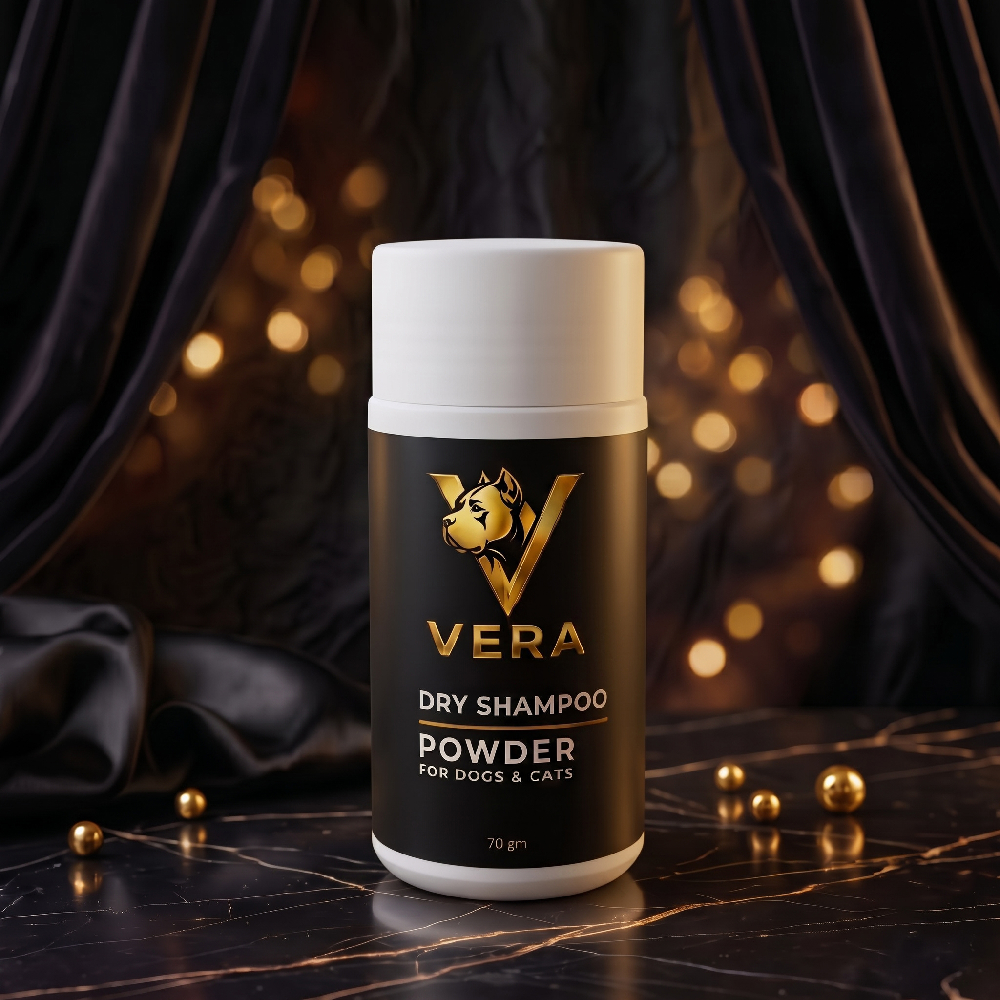

التوصيل: لكل محافظات مصر
فيرا دراي شامبو بودر هو بودرة تنظيف جاف مصممة للعناية بنظافة الكلاب والقطط بدون الحاجة إلى استخدام الماء. تساعد على إزالة الروائح غير المرغوبة وامتصاص الزيوت والشوائب من الفرو، لتمنح حيوانك الأليف إحساسًا بالنظافة والانتعاش.
يُعد خيارًا عمليًا في الحالات التي يصعب أو لا يُنصح فيها باستخدام الماء، مثل فترات المرض، بعض الحالات العلاجية، أو عندما يكون الاستحمام بالماء غير مناسب للحيوان.
تم تصميمه ليكون آمنًا تمامًا للاستخدام المباشر على الكلاب والقطط بمختلف أعمارها.
تنظيف متكامل بدون الحاجة لقطرة ماء واحدة. مثالي كحل بديل للحفاظ على الانتعاش بين مرات الاستحمام.
يساعد على إزالة الروائح غير المرغوبة وامتصاص الزيوت والشوائب من الفرو بفعالية كبيرة.
❤️ مناسب وعملي للاستخدام أثناء فترات العلاج أو الحالات التي يصعب فيها الاستحمام بالماء التقليدي.
يُوضع مقدار مناسب من البودرة مباشرة على الفرو الجاف للحيوان الأليف.
تُوزع بلطف وتُفرك برفق داخل الفرو حتى تصل إلى الجلد بشكل جيد وتغطي كافة المناطق.
بعد ذلك، يتم تمشيط الفرو جيداً باستخدام الفرشاة لإزالة البودرة الزائدة والشوائب العالقة.
Vera Dry Shampoo Powder — نظافة وانتعاش بدون ماء.